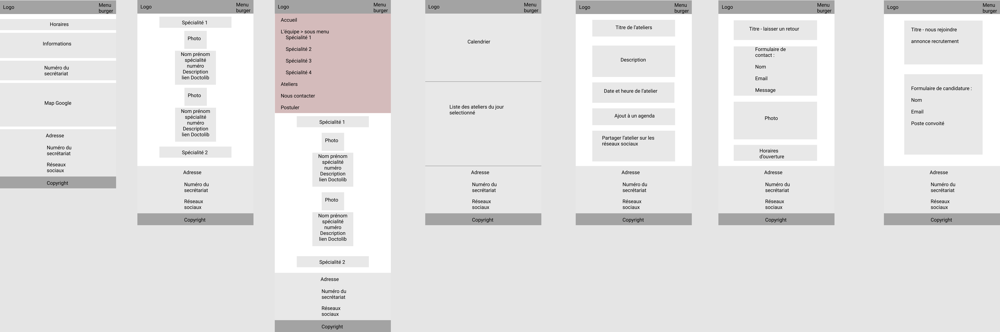

Portfolio de Simon Drosik
Portfolio de Simon Drosik
Site internet
Compétences Mises en Œuvre
Conception Web
Web Design HTML CSS PHP JavaScript (React.js) SQL WordPressErgonomie
Conception d'interface Connaissance des critères d'utilisabilité Figma (Outil de design d'interface)J'ai développé le site web d'une maison de santé pluridisciplinaire en utilisant la méthode agile. Cette approche a permis d'identifier les besoins essentiels du client et de développer le site sous une version bêta fonctionnelle, qui pouvait ensuite être complétée et améliorée. Mes missions comprenaient des réunions avec la coordinatrice de la MSP pour comprendre leurs besoins, la création de personas, la réalisation de maquettes fonctionnelles (à l'image de celles ci-dessus) et graphiques, ainsi que le développement du site web en utilisant WordPress et un thème enfant, impliquant l'utilisation des langages HTML et CSS. J'ai également produit une charte détaillant les différentes étapes du projet. Ce projet m'a permis de mettre en pratique mes compétences en conception web, en utilisant une approche collaborative et itérative pour répondre aux besoins spécifiques de la maison de santé pluridisciplinaire. Retrouver le site en ligne ICI